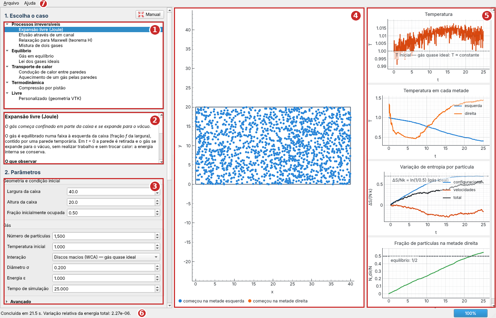
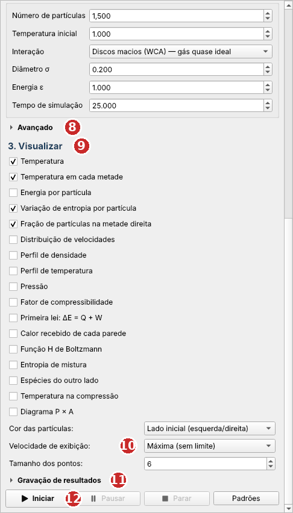

Termodinâmica partícula a partícula — manual de uso
O TermoLab2D simula, partícula por partícula, um gás em duas dimensões e mostra ao vivo as grandezas da termodinâmica e da teoria cinética: temperatura, pressão, entropia, calor, trabalho, distribuição de velocidades. A simulação roda em C++ (com OpenMP); a interface, em Python. Cada caso prepara um experimento clássico (expansão livre, efusão, teorema H, mistura, condução de calor, compressão por pistão…) com parâmetros que o usuário pode alterar.
numpy, matplotlib, PySide6 e pyqtgraph;g++) — ou um executável do simulador já compilado.sudo apt install ./termolab2d_1.0-1_amd64.deb
O apt instala junto as poucas bibliotecas gráficas do sistema de que o programa
precisa. O TermoLab2D aparece no menu de aplicativos (categoria Educação/Ciência), com o manual
em PDF como ação do ícone; no terminal, o comando é termolab2d. O pacote é
autocontido — traz seu próprio Python, PySide6, numpy e pyqtgraph em /opt/termolab2d
— e não interfere no Python do sistema. Para remover: sudo apt remove termolab2d.
Requisitos: 64 bits, glibc 2.28 ou mais recente (Debian 11+, Ubuntu 20.04+, Mint 20+). Cerca de 215 MB em disco.
Em distribuições recentes (Ubuntu, Debian, Mint), o pip não instala pacotes no Python
do sistema. Use um ambiente virtual que aproveite os pacotes já instalados:
cd "pasta/do/TermoLab2D" python3 -m venv .venv --system-site-packages .venv/bin/pip install -r requirements.txt .venv/bin/python interface.py
O compilador vem do pacote g++ (sudo apt install g++). Na primeira
execução — e sempre que o código C++ for alterado — a interface compila o simulador sozinha.
Também é possível compilar à mão com make.
Execute TermoLab2D-1.0-instalador.exe. Ele instala tudo o que é necessário — inclusive
o Python e o simulador já compilado — só para o seu usuário, sem pedir senha de administrador, em
%LOCALAPPDATA%\Programs\TermoLab2D. O programa aparece no menu Iniciar (com o manual em
PDF e o desinstalador) e, se você quiser, na área de trabalho. Para remover: menu Iniciar →
Desinstalar o TermoLab2D, ou Configurações → Aplicativos.
Requisitos: Windows 10 (versão 1903 ou mais recente) ou Windows 11, 64 bits. Cerca de 115 MB em disco.
py -m pip install -r requirements.txt py interface.py
Sem compilador instalado, coloque um simulator.exe pré-compilado em
bin\windows\. Com o MinGW-w64 instalado, a interface compila o simulador sozinha.
TERMOLAB2D_SIMULATOR → build/simulator (compilando se as fontes forem mais novas)
→ bin/<linux|windows>/.
| # | Região | Função |
|---|---|---|
| 1 | Lista de casos | Escolha o experimento. Os casos estão agrupados por tema. |
| 2 | Descrição | O que o caso faz e o que observar. Role o texto até o fim; o link Mais detalhes no manual abre a seção do caso. |
| 3 | Parâmetros | Geometria e condição inicial do caso; propriedades do gás. Os campos mudam com o caso e com a interação escolhida. |
| 4 | Partículas | A caixa, os sólidos (cinza), as paredes térmicas (vermelho = quente, azul = fria) e o pistão. Use a roda do mouse para ampliar e arraste para deslocar. |
| 5 | Gráficos | As grandezas escolhidas em “Visualizar”, atualizadas ao vivo. Linhas tracejadas são valores teóricos de referência. |
| 6 | Barra de status | Tempo, passo, temperatura, energia por partícula e progresso; ao final, um resumo (conservação de energia ou primeira lei). |
| 7 | Menus | Arquivo: salvar imagens, exportar dados e a configuração. Ajuda: este manual e informações sobre o modelo. O botão Manual, ao lado de “1. Escolha o caso”, e a tecla F1 abrem este manual na seção do caso selecionado. |
A coluna da esquerda rola. Na parte de baixo ficam:

| # | Item | Função |
|---|---|---|
| 8 | Avançado | Clique para abrir: passo de tempo, equilibração, cortes, massa, semente, threads. |
| 9 | Visualizar | Marque os gráficos que quer ver. Pode marcar e desmarcar durante a simulação — os dados de todos são calculados sempre. |
| 10 | Cor, velocidade, tamanho | Cor das partículas: pela velocidade, pelo lado em que começaram, ou pela espécie (A/B). Velocidade de exibição: quantos quadros por segundo são mostrados; “Máxima” roda o mais rápido possível. Tamanho dos pontos: só o desenho; não muda a física. |
| 11 | Gravação de resultados | Grava a trajetória (JSONL) e/ou quadros VTK para o ParaView numa pasta. |
| 12 | Botões | Iniciar, Pausar/Continuar, Parar e Padrões (restaura os valores padrão do caso). |
Todos os valores estão em unidades reduzidas (massa, constante de Boltzmann e diâmetro típico da ordem de 1). Passe o mouse sobre um campo para ver uma explicação curta.
| Campo | Padrão | Significado e dicas |
|---|---|---|
| Número de partículas | 1 500 | Mais partículas = flutuações menores (∝ 1/√N) e simulação mais lenta. Entre 200 e 3 000 é confortável. |
| Temperatura inicial | 1 | Temperatura em t = 0. Depois disso não há termostato: a temperatura muda só pela física do caso. |
| Interação | WCA | Força entre as partículas: WCA, Lennard-Jones, Coulomb ou nenhuma. Ver seção 5. |
| Diâmetro σ | 0,2 | (WCA e LJ) Tamanho efetivo das partículas. Aumentar σ deixa o gás mais denso e menos ideal, e encurta o livre caminho médio. |
| Energia ε | 1 | (WCA e LJ) Intensidade da interação; no Lennard-Jones, profundidade do poço atrativo. |
| Carga | 1 | (Coulomb) Carga igual para todas as partículas — só repulsão. |
| Tempo de simulação | depende do caso | Tempo físico a partir de t = 0. O número de passos é tempo/dt. |
| Campo | Padrão | Significado e dicas |
|---|---|---|
| Tempo de equilibração inicial | 5 | Antes de t = 0, o gás é equilibrado na região inicial com paredes temporárias e temperatura fixa. Elimina o transiente do sorteio das posições. Zero desliga. |
| Passo de tempo dt | 0,001 | Menor = mais preciso e mais lento. Verifique pela energia total (deve ficar constante em sistemas isolados). Com σ pequeno ou temperaturas altas, reduza. |
| Passos entre quadros | depende do caso | De quantos em quantos passos um quadro vai para a interface. Afeta a resolução temporal dos gráficos, não a física. |
| Corte do Lennard-Jones | 2,5 σ | Distância além da qual a força LJ é desprezada. |
| Raio de corte (Coulomb) | 3 | Distância além da qual a força coulombiana é desprezada. |
| Suavização (Coulomb) | 0,05 | Evita a divergência de 1/r em encontros muito próximos. |
| Massa | 1 | Massa das partículas (espécie A). |
| Semente aleatória | 42 | Mesma semente + mesmos parâmetros = mesma simulação. Troque para obter outra realização estatística. |
| Threads OpenMP | 0 | Núcleos usados pelo simulador; 0 usa todos. |
Cada caso tem ainda seus parâmetros próprios (tamanho da caixa, altura do canal, temperatura das paredes, velocidade do pistão…), descritos na seção 8.
| Interação | Potencial | Comportamento | Use para |
|---|---|---|---|
| Discos macios (WCA) | 4ε[(σ/r)¹² − (σ/r)⁶] + ε, para r < 21/6σ |
Só repulsão, de curto alcance: as partículas colidem como discos de diâmetro ≈ σ. | Gás quase ideal com colisões. É o padrão. |
| Lennard-Jones | 4ε[(σ/r)¹² − (σ/r)⁶], cortado em 2,5σ |
Repulsão de curto alcance + atração. | Gás real: esfria na expansão livre; Z < 1. |
| Coulomb | q²/r, com corte e suavização | Repulsão de longo alcance; cada partícula sente dezenas de vizinhas. | Contraste: gás fortemente repulsivo, que esquenta ao expandir. |
| Sem interação | zero | As partículas só colidem com as paredes. | Gás ideal exato; mostra o papel das colisões (sem elas não há relaxação). |
Marque-os em Visualizar. Séries temporais mostram a história desde t = 0; distribuições e perfis mostram o instante atual. Linhas tracejadas cinzentas são referências teóricas.
| Gráfico | O que mostra |
|---|---|
| Temperatura | T = K/(N k), com dois graus de liberdade por partícula. |
| Temperatura em cada metade | T das partículas à esquerda e à direita do centro da caixa (descontado o fluxo médio). |
| Energia por partícula | Cinética, potencial e total. Em sistemas isolados a total é constante — bom teste para dt. |
| Variação de entropia por partícula | ΔS/(Nk) configuracional (posições), de velocidades e total, em relação a t = 0. Ver como é calculada. |
| Fração na metade direita | Ndir/N. |
| Distribuição de velocidades | Histograma de |v| comparado com Maxwell–Boltzmann 2D na temperatura atual e na inicial. |
| Perfil de densidade | n(x)/n̄ em faixas verticais: valor instantâneo (barras) e média recente (linha). |
| Perfil de temperatura | T(x) em faixas verticais: instantâneo e média recente. |
| Pressão | Pressão medida nas paredes (média móvel e média acumulada) comparada com NkT/A. |
| Fator de compressibilidade | Z = ⟨P⟩A/(N k⟨T⟩); Z = 1 no gás ideal. |
| Primeira lei | ΔE, calor Q recebido das paredes térmicas, trabalho W do pistão e Q + W, por partícula. |
| Calor de cada parede | Energia acumulada que cada parede térmica entregou ao gás (negativa = retirou). |
| Função H de Boltzmann | H = ∫ f ln f d²v e seu valor de equilíbrio. |
| Entropia de mistura | Entropia configuracional distinguindo as espécies e sem distinguir, e o valor ideal −Σ xᵢ ln xᵢ. |
| Espécies do outro lado | Fração de A na metade direita e de B na metade esquerda. |
| Temperatura na compressão | T comparada com a adiabática ideal (T A = cte) e a isotérmica. |
| Diagrama P × A | Caminho no plano pressão × área, com a adiabática (P A² = cte) e a isotérmica (P A = cte) ideais. |
Os gráficos podem ser ampliados com a roda do mouse e deslocados arrastando; clique com o botão direito para opções (inclusive “View All” para voltar à escala automática e “Export…” para salvar um gráfico isolado).
Em cada caso: objetivo, parâmetros próprios, o que observar e atividades sugeridas para aula.
Objetivo. Mostrar o aumento de entropia num processo irreversível e o efeito das interações na temperatura de um gás real.
Montagem. O gás é equilibrado numa faixa à esquerda (fração f da largura), atrás de uma parede temporária, retirada em t = 0. O gás se expande para o vácuo sem realizar trabalho e sem trocar calor: a energia interna se conserva.
Parâmetros próprios. Largura e altura da caixa (40 × 20); fração inicialmente ocupada f (0,5).
O que observar.
Objetivo. Relaxação ao equilíbrio entre dois reservatórios; separação entre equilíbrio mecânico (pressão) e térmico (temperatura).
Montagem. Uma parede central com um canal divide a caixa em duas câmaras; o gás começa todo na esquerda.
Parâmetros próprios. Largura e altura da caixa (40 × 20); altura do canal (6); espessura da parede (2).
O que observar.
Objetivo. Ver a distribuição de Maxwell–Boltzmann surgir das colisões e a função H de Boltzmann decrescer.
Montagem. As posições são equilibradas; em t = 0 todas as partículas recebem o mesmo |v| = √(2kT/m), em direções aleatórias.
Parâmetros próprios. Largura e altura da caixa (40 × 20).
O que observar. O pico do histograma se alarga até a curva de Maxwell–Boltzmann em poucas unidades de tempo; H cai até o equilíbrio e não volta a subir; a temperatura (energia) não muda.
Objetivo. Entropia de mistura e paradoxo de Gibbs.
Montagem. Espécie A (azul) equilibrada na metade esquerda, espécie B (laranja) na direita; a divisória é retirada em t = 0.
Parâmetros próprios. Caixa 20 × 20; partículas de cada espécie (400); “espécies idênticas”; razão de massas mB/mA; razão de diâmetros σB/σA.
O que observar. A entropia que distingue as espécies cresce até ln 2 por partícula; a que só olha para as posições não muda, porque a densidade já era uniforme. A mistura é difusiva: o tempo cresce com o quadrado do tamanho da caixa.
Objetivo. Distribuição de Maxwell–Boltzmann, flutuações e conservação de energia.
Parâmetros próprios. Caixa 20 × 16; tamanho do obstáculo central (fração de cada lado; 0 = sem obstáculo).
O que observar. O histograma de |v| coincide com f(v) = (v/σ²) exp(−v²/2σ²), σ² = kT/m; a temperatura flutua em torno de um valor constante; a energia total se conserva.
Objetivo. Medir a pressão mecanicamente e verificar P A = N k T (em 2D, a “área” faz o papel do volume); desvios do gás ideal.
Montagem. Caixa simples; a pressão é o impulso transferido às paredes por unidade de comprimento e de tempo.
Parâmetros próprios. Caixa 20 × 20 (padrão: 2 000 partículas, σ = 0,1).
O que observar. A pressão instantânea flutua muito; a média acumulada converge. Valores de Z obtidos com 2 000 partículas na caixa padrão e T = 1:
| Interação | σ | Z |
|---|---|---|
| sem interação | — | 1,00 |
| WCA | 0,1 | ≈ 1,09 |
| WCA | 0,2 | ≈ 1,42 |
| WCA | 0,3 | ≈ 2,43 |
| Lennard-Jones | 0,2 | ≈ 0,93 (T = 1); ≈ 0,61 (T = 0,6) |
Objetivo. Transporte de calor, estado estacionário e lei de Fourier.
Montagem. Parede esquerda quente, direita fria (paredes térmicas); paredes de cima e de baixo isolantes.
Parâmetros próprios. Caixa 40 × 20; temperatura da parede esquerda (2) e da direita (0,5).
O que observar. O perfil T(x) evolui até um gradiente estacionário, com “saltos” de temperatura junto às paredes. No estacionário as curvas de calor das duas paredes ficam paralelas e opostas: a inclinação é o fluxo de calor J. A densidade é maior do lado frio.
Objetivo. Relaxação térmica e a primeira lei sem trabalho (ΔE = Q).
Parâmetros próprios. Caixa 40 × 20; temperatura das quatro paredes (2). Padrão: gás a T = 0,3.
O que observar. T se aproxima da temperatura das paredes aproximadamente de forma exponencial; o gás esquenta primeiro junto às paredes; ΔE = Q o tempo todo.
Objetivo. Trabalho, processos adiabáticos e isotérmicos, reversíveis e irreversíveis.
Montagem. A parede direita é um pistão que, a partir de t = 2, se move com velocidade constante da posição inicial à final (frações da largura). A colisão com o pistão é elástica no referencial do pistão.
Parâmetros próprios. Caixa 40 × 20; posição inicial (1,0) e final (0,5) do pistão; velocidade (0,1); paredes fixas isolantes (adiabática) ou térmicas à temperatura inicial (isotérmica). Padrão: σ = 0,1.
O que observar.
Use qualquer máscara VTK 2D (legacy ASCII, STRUCTURED_POINTS, 0 = sólido, ≠ 0 = livre)
e escolha a faixa da caixa ocupada em t = 0. Útil para meios porosos, obstáculos e canais.
O script create_geometry.py gera caixas simples; a formatação está no README.
| Onde | O que faz |
|---|---|
| Arquivo → Salvar imagem das partículas (Ctrl+S) | PNG da caixa com as partículas. |
| Arquivo → Salvar imagem da janela | PNG da janela inteira, com os gráficos. |
| Arquivo → Exportar séries temporais (CSV) | Todas as séries temporais calculadas (uma coluna por curva, primeira coluna = tempo), para planilhas, Python, Origin… |
| Arquivo → Salvar configuração do caso (.cfg) | O arquivo de parâmetros e a geometria do caso atual, para rodar o simulador fora da interface:
python3 visualize.py caso.cfg ou build/simulator caso.cfg > saida.jsonl. |
| Gravação de resultados → trajetória (JSONL) | Todos os quadros (posições e velocidades) em texto, uma linha por quadro. |
| Gravação de resultados → VTK (ParaView) | Uma série de arquivos VTK; abra particles.vtk.series no ParaView. |
| Botão direito sobre um gráfico → Export… | Salva um gráfico isolado (PNG, SVG ou os dados em CSV). |
A gravação cria uma subpasta com o nome do caso e a data dentro da pasta escolhida
(padrão: TermoLab2D_resultados na pasta pessoal), com uma cópia da configuração usada.
Partículas em 2D, integradas por velocity Verlet. Paredes e sólidos refletem especularmente; paredes térmicas devolvem a partícula com velocidade sorteada na temperatura da parede (componente normal com a distribuição do fluxo, tangencial gaussiana). O pistão é uma parede móvel; a colisão é elástica no seu referencial (vx' = 2u − vx). Depois de t = 0 não há termostato.
Massa m = 1, constante de Boltzmann k = 1, energia ε = 1; comprimentos em unidades da caixa (σ = 0,2 por padrão). Com comprimento medido na unidade L, o tempo fica em unidades de L√(m/ε). “Temperatura 1” não é 1 kelvin: para um gás de argônio (ε/k ≈ 120 K), T = 1 com ε = 1 corresponde a cerca de 120 K.
A entropia é a estimativa de Boltzmann em grade grossa, mostrada como variação em relação a t = 0:
S_conf/(N k) = −Σ p_i ln(p_i / A_i) (posições; células com cerca de 20 partículas) S_vel/(N k) = −∫ f(v) ln f(v) d²v (histograma 2D das velocidades) H = ∫ f ln f d²v = −S_vel/(N k)
Ambas usam a correção de Miller–Madow para o viés de amostras finitas. Para um gás uniforme, Sconf → ln A; para Maxwell–Boltzmann, Svel = 1 + ln(2πkT/m). São estimativas: com poucas partículas elas flutuam e ficam ligeiramente abaixo do valor exato.
| Mensagem ou sintoma | O que fazer |
|---|---|
| “O Windows protegeu o computador” ao instalar | O instalador não é assinado digitalmente. Clique em Mais informações → Executar assim mesmo. |
| Uma janela “TermoLab2D — erro” | O texto completo do erro fica em %LOCALAPPDATA%\TermoLab2D\erro.log (Windows) ou ~/.local/state/TermoLab2D/erro.log (Linux); envie esse arquivo a quem mantém o programa. |
| externally-managed-environment ao instalar com pip | Use o ambiente virtual da seção 1. |
| Simulador não encontrado / falha ao compilar | Instale g++ (Linux) ou MinGW-w64 (Windows), ou coloque o executável em bin/<sistema>/. |
| Falha na trajetória/colisão: reduza dt | Duas partículas se aproximaram demais num passo. Reduza dt (Avançado), a temperatura ou a velocidade do pistão. |
| Densidade alta demais para a distância mínima inicial | Há partículas demais para a área inicial com o σ escolhido. Reduza N ou σ, ou aumente a região inicial. |
| A simulação demora muito | Velocidade de exibição “Máxima”; menos partículas; mais passos entre quadros; tempo de simulação menor. |
| A energia total varia num caso isolado | Reduza dt. Em casos com paredes térmicas ou pistão a energia deve variar — confira a primeira lei. |
| Gráfico vazio ou com escala estranha | Botão direito → “View All”. Alguns gráficos só fazem sentido em certos casos (por exemplo, o diagrama P × A no pistão). |
| A entropia não chega exatamente ao valor teórico | É uma estimativa estatística; aumente N ou espere mais tempo. Com Lennard-Jones, as correlações entre partículas reduzem a entropia configuracional. |
gui/scenarios.py, crie um Scenario com os parâmetros próprios
(Param), a função build que gera a geometria e as chaves do .cfg, e,
se quiser, valores teóricos em references. Acrescente-o a SCENARIOS; o formulário é
montado sozinho. A descrição em HTML aparece no painel do caso; acrescente também uma seção a este manual
(gui/manual/manual.html) com a âncora caso-<id>.gui/observables.py, crie uma subclasse de Observable
(série temporal, distribuição ou perfil) e acrescente-a a OBSERVABLES.| Tecla | Ação |
|---|---|
| F1 | Abre este manual na seção do caso selecionado |
| Ctrl+S | Salvar imagem das partículas |
| Ctrl+Q | Sair |
| Roda do mouse / arrastar | Ampliar / deslocar a caixa ou um gráfico |